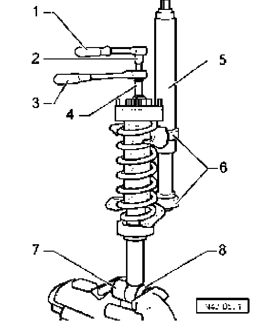
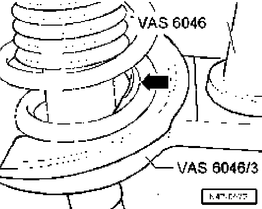
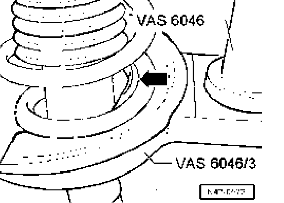
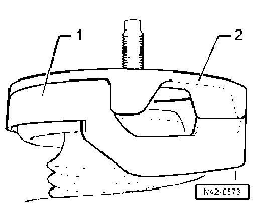
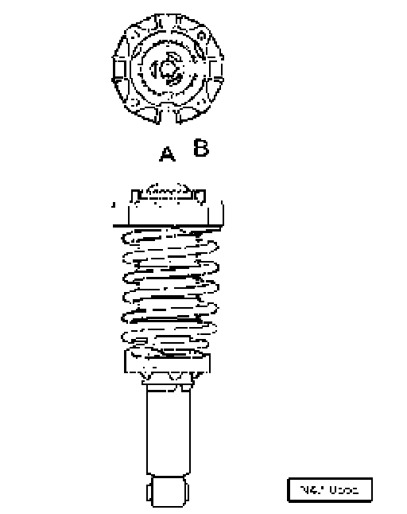
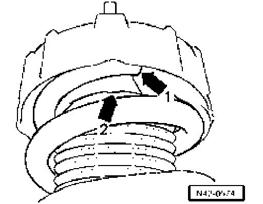

Rear
Removing coil spring

- Pre-load coil spring until upper spring plate is free.
- Remove hex nut from piston rod.
- Use spring tensioner VAS 6046 and spring holder VAS 6046/3 to remove individual components from suspension strut and coil spring
1 - Ratchet (commercially available)
2 - T10001/14
3 - T10001/11
4 - T10001 /5
5 - VAS 6046
6 - VAS 6046/3
7 - VW 455
8 - 3350/2
Caution! First pre-load the spring until the upper spring plate is no longer under load.

- Make sure the coil spring is properly seated in the spring holder VAS 6046/3 - arrow -.
Installing coil spring
- Set coil spring on lower spring holder VAS 6046/3.

- Make sure coil spring is seated properly in spring holder VAS 6046/3 - arrow -.

- Place upper support - 1 - on coil spring and then upper spacer - 2 - on upper support.

- Install upper spring plate so that the two center lines - A and B - are parallel to each other.

- The end of spring must lie against the stop on support - arrow 1 -.
- Make sure the protective sleeve is clipped into upper spring plate - arrow 2 -.
- Tighten new hex nut on piston rod.
- Release tension on spring tensioner VAS 6046 and remove from coil spring.
- Install strut go to Installing.
Tightening torque
Nut for suspension strut 60 Nm
^ Use new nuts.